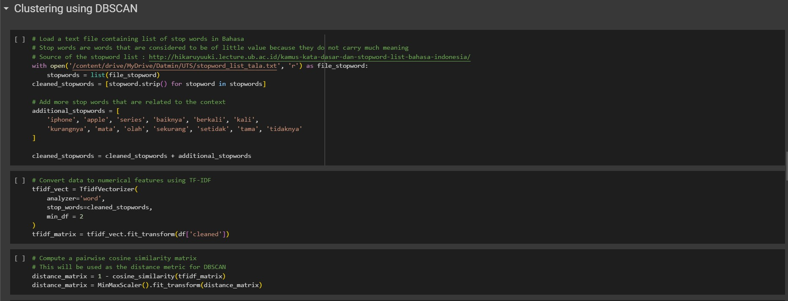

Klasifikasi Teks Berbahasa Indonesia Berdasarkan Data Tweet
untuk Produk "iPhone" dengan Metode DBSCAN
untuk Produk "iPhone" dengan Metode DBSCAN
Tangkapan layar di bawah ini adalah data yang berhasil diperoleh dari Twitter yang berhubungan dengan iPhone. Data tersebut terdiri dari beberapa kolom yang berisi waktu dibuatnya Tweet, id, isi Tweet, username, dan lainnya. Data ini berasal dari file tweet_iphone.csv.
Tangkapan layar di bawah ini adalah daftar dari sebagian stop word yang ada. Untuk daftar lengkapnya dapat dilihat di file aslinya, yaitu stopword_list_tala.txt.
Tangkapan layar di bawah adalah tampilan kode dan proses crawl Twitter.
Tangkapan layar di bawah adalah tampilan kode dan proses clustering/klasterisasi yang telah dilakukan. Untuk metodenya, kami memilih metode DBSCAN.
